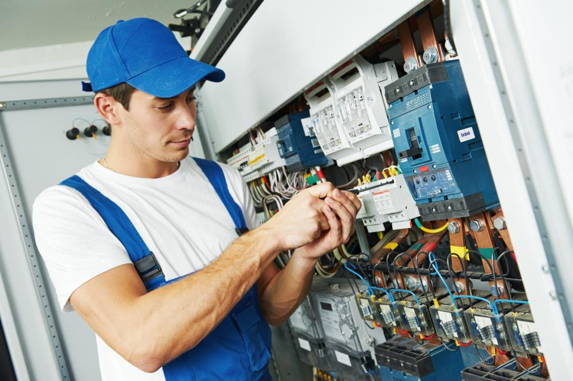

Why you should choose a local Electrician in Los Angeles?
February 18, 2024
CONTENT
Introduction
A local electrician in Los Angeles is always there for you and can help you quickly in case of a breakdown. That's why it's important to always choose a local electrician in Los Angeles so that your wiring problem can be solved efficiently and quickly. In this blog we explain why it's important to call a local electrician in Los Angeles in case of a breakdown. There are many practical and useful reasons why you should choose a local electrician. Find a reliable electrician nearby and be safe and protected in case of an electrical fault!
Why choose a local electrician in Los Angeles?
Knowledge of local regulations
There is no mistake in calling an electrician from any part of America, but hiring a local electrician will ensure you are on the safe side after the job is done. Why is a local electrician in los angeles an advantage? los angeles electricians are well versed in the specific local building regulations and safety standards. This ensures that all work complies with legal requirements and your safety is guaranteed.
Fast response
If you call an electrician who is not in your area, there is a risk that your problem will last for a long time and not be repaired because the electrician cannot be at your place so quickly. For this reason, it is safest to call a local electrician as they will find your address quickly and therefore get the job done quickly and efficiently. In electrical emergencies, every minute counts. A local electrician in Los Angeles can be on site quickly, which is crucial in the event of a power outage or other emergency.
Personal service
A local electrician in los angeles "https://neeka-lord.github.io/Alpha-/" who has already carried out electrical interventions in your home or business premises knows all the installations in your building well and can always solve the problem quickly when electricians come to you for the first time. Find the right local electrician in your area and trust them. They will return the favor for you with good and high-quality service!
Services from local electricians

Electrical inspections and safety checks
It is not a mistake to call an electrician from any part of America, but hiring a local
electrician will keep you safe after the job.
Regular electrical inspections and safety checks are key to keeping the electrical system
working properly. Be sure to call your local electrician in Los Angeles from time to time to
take a preventative look at all the wiring in your home or business. When you call them,
the electrician will inspect the installations and check the integrity of cables, fuses
and other components.
These checks are important to prevent potentially dangerous situations and ensure the
safety of users. This also reduces potential costs, as regular electrical inspections
are usually cheaper than repairs and on-site calls in the event of a breakdown.
Installing Smart Home Technologies
Modern homes increasingly use smart technologies to improve comfort, energy efficiency and security. A local electrician will install smart devices such as smart thermostats, lighting, cameras or sensors. They will also integrate these devices into a central smart system and ensure they function properly.
Note: Do not install smart home technology in your rooms yourself if you are not completely sure how to implement it. It is always safer to call your local electrician in Los Angeles and have him install your smart home technology reliably and quickly.
Advice and implementation of energy-efficient measures
Electricians offer advice on energy efficiency to reduce energy consumption and costs. This may include recommendations for the use of energy-efficient appliances, the installation of LED lighting, the use of smart consumption management solutions and other measures that help save energy. Listen to the electrician's advice and think about your surroundings!
Benefits of choosing an electrician in your area!
Local expertise
Los angeles electricians not only know the local climate and its impact on electrical installations, but they also maintain relationships with local suppliers and other service providers. Their knowledge will significantly influence the quality of their work, so always call a local electrician and ensure your fault is fixed quickly and efficiently.

Supporting the local economy
By using local services, you contribute to Los angeles's economy and contribute to the
prosperity of your community.
When you call a local electrician in Los Angeles "https://neeka-lord.github.io/Alpha-/" to fix your
breakdown, you are not only doing something good for yourself but also for your community.
Be the one to improve your community and use the services of local electricians!
Sustainability
Short travel distances mean less impact on the environment, which contributes to the sustainability of the city.
Conclusion
Choosing a local electrician in Los Angeles offers numerous benefits. From knowledge of
local regulations to quick responses and personalized service, Los Angeles electricians are
there to assist you with expertise and experience. Whether it's a simple repair or
implementing advanced technologies, your local electrician is your trusted patner.
An electrician nearby is always the right choice. If you would like more information
about our service and how we work, feel free to contact us and ask about our impeccable
services!

Contact us now.
We are 24/7
available.
If you urgently need a qualified electrician in los angeles and the surrounding area, our emergency electrical service is there for you 24/7.